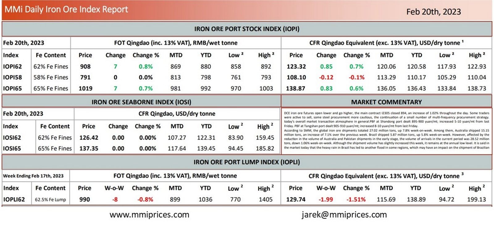

DCE iron ore futures open lower and go higher, the main contract I2305 closed 894, an increase of 1.02% throughout the day. Some traders wereactive to sell, some steel procurement more cautious, the continuation of a small number of multi-frequency procurement strategy. today’s overall market transaction atmosphere in general.PBF at Shandong port dealt 895-900 yuan/mt; increased 5-10 yuan/mt from last Friday. PBF at Tangshan port dealt 905-910 yuan/mt; increased 8-10 yuan/mt from last Friday. According to SMM, the global iron ore shipments totaled 27.02 million tons, up 7.8% week-on-week. Among them, Australia shipped 15.15 million tons, an increase of 7.1% over the previous week. Brazil shipped 5.87 million tons, up 5.8% week-on-week. However, affected by the reduction in the volume of Australia and Pakistan shipments in the early stage, the volume of arrivals in the current period was 28.52 million tons, down 1.06% week-on-week. Although the shipment volume has slightly increased this week, it remains at the annual low level. It is said in the market today that the heavy rain in Brazil has led to another flood in some regions, which may have an impact on the shipment of Brazilian.

Download PDFSource: Metals Market Index (MMi)